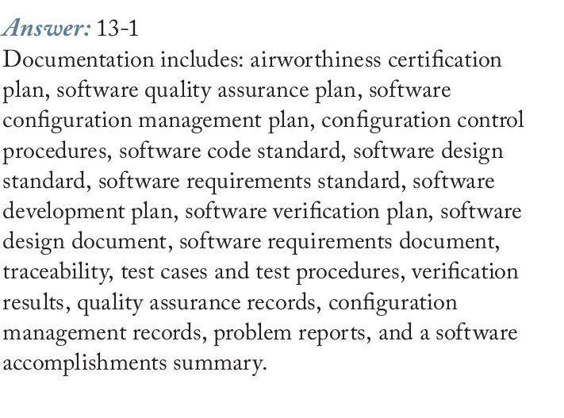
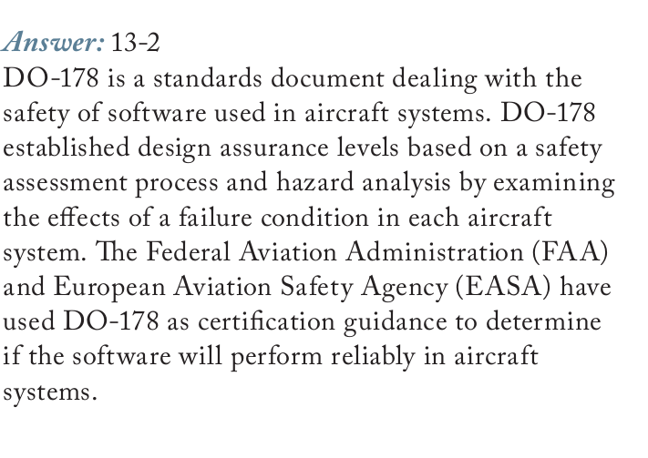
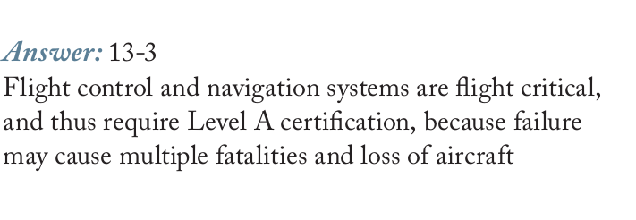
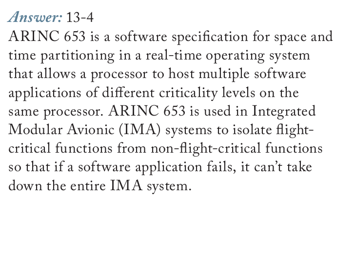
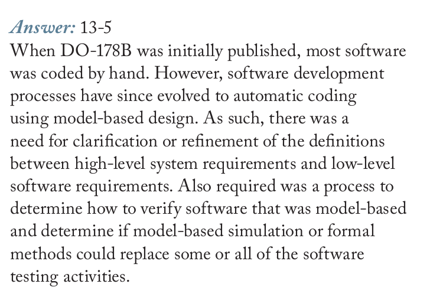

Tooley: Ch.13 Software (p.207-217): 13.1 classification, 13.2 certification, 13.3 upgrading (FLS, LSAP, UMS, OSS, DFLD, EEC loading with PDL), 13.4 data verification; 7 MCQs; plus Ch.15 MCQ on navigation database update
Floyd: Ch.2 section 2-12 Error Codes (parity, CRC, Example 2-41; p.109-114) and Ch.11 section 11-11 (ROM checksum test, Figures 11-74 and 11-75). Floyd has NO content on DO-178, software levels or loading aircraft software: it matches only on the data error checking aspect.
The main source is the 6-page EASA Part-66 Module 5.13 document (13.1 to 13.6, with Figure 13-1 and 6 questions with answers) plus Tooley ch.13. The module has 2 interactive demos (checksum versus CRC, a DAL level explorer).
Aircraft software cannot be seen or touched, yet it must be treated like any other aircraft part. An unapproved software change can lose an aircraft. This module answers four questions: how bad a software failure must be to count as dangerous (five levels A to E), which documents and traceability DO-178B/C require, how software and data are loaded onto the aircraft (FLS, LSAP, UMS, OSS, DFLD), and how to know a loaded file is not corrupt (checksum, CRC), with two live demos.
Millions of lines of code run at once on dozens of computers; code, data and embedded operating systems all count as software
Flight control software failing during a zero-visibility IFR approach is the scenario that control procedures exist to prevent
An Airworthiness Directive can require a software fix, for example an EEC fault that lost engine parameters and froze the power setting
PART 1/5 · 07
Software is an aircraft part
According to Tooley (ch.13), software covers executable code (programs), the data the programs use and the embedded operating systems. All of it needs periodic upgrading and fixes for problems found in service. The consequences of failure range from insignificant to catastrophic (a major avionics failure, engine faults).
📖 Explained for complete beginners
What differs from PC software: even a "small" update cannot simply be installed. It goes through the same approval procedure as a hardware change, because Tooley treats software as an aircraft part. The lecture gives a scenario to picture: flight control software failing during an IFR approach in zero visibility.
PART 1/5 · 07
An Airworthiness Directive demanding a software fix: a real example
Tooley Figure 13.1 quotes an Airworthiness Directive (ATA 73, fuel and control, EEC software modification). Six in-service events had occurred: loss of engine parameters in the cockpit together with a frozen power setting on that engine. Investigation traced it to a fault in the engine software. A safety assessment found it could cause hazardous asymmetric thrust if it happened during the take-off roll and the crew tried to abort. The directive requires introducing revised engine software.
📖 Explained for complete beginners
The example links three things that are often treated separately: a source code defect, a safety assessment and a legal document. The fault sits in code; the danger level is set by analysing consequences (asymmetric thrust at take-off); and the required action is a directive, not advice. That is why every fix must go through configuration control.
PART 2/5
02
Five severity levels A to E
A catastrophic (aircraft loss), B hazardous, C major, D minor, E no effect
Failure probability per flight hour: A below 10⁻⁹, B between 10⁻⁹ and 10⁻⁷, C between 10⁻⁷ and 10⁻⁵, D above 10⁻⁵
Flight control and navigation are level A; in-flight entertainment is level E
Different levels usually do not share a processor, unless an approved partitioning scheme such as ARINC 653 is used
PART 2/5 · 07
The five software levels A to E
Level
Failure type
Description
Probability/flight hour
A
Catastrophic
Aircraft loss, fatalities
below 10⁻⁹
B
Hazardous/severe
Crew cannot perform tasks; serious or fatal injuries to some occupants
A memory aid: the nearer the top of the table, the smaller the allowed probability. Level A must be "extremely improbable" (below one in a billion per flight hour), level D only has to be "probable". The thresholds were read from the book page (image below). Tooley grades levels by the extra workload on the crew and their ability to fly without the automatic control or information the failed software would have supplied.
PART 2/5 · 07
Example applications by level (Tooley Table 13.2)
Level
Typical applications
A
AHRS, GPS/ILS/MLS/FLS, SATNAV, VOR/ADF
B
TCAS, ADS-B transponder, flight displays
C
DME, VHF voice communications
D
AHRS automatic levelling, CMC/CFDIU, data loader, weather radar
E
In-flight entertainment
📖 Explained for complete beginners
Three chapter 13 questions sit here: weather radar is level D (Q4); electronic engine control software is an LSAP, a kind of loadable software (Q5); level C is the class where failure can cause minor injuries to passengers or crew (Q1). Note that flight displays are level B, which is part of why Module 06 stresses DO-178 and DO-254 for display systems.
PART 3/5
03
DO-178B/C and traceability
DO-178B/ED-12B (1992) was published by RTCA and EUROCAE; FAA and EASA use it as certification guidance
Figure 13-1: level A needs two extra red traces; levels A to C need purple traces; levels A to D need green traces; level E needs none
A post-certification software change at level A, B or C must be approved by the design organisation (DO)
PART 3/5 · 07
Certification: software, hardware and system safety
Tooley Figure 13.2 shows that the hardware and software life cycles are tightly interrelated: a hardware configuration change always requires a software configuration change. The safety assessment process (SAP, AMC 25.1309 and ARP 4761) runs in parallel with the system development process (ARP 4754), which splits into hardware development (DO-254) and software development (DO-178B).
Initial certification requires the design organisation (DO) to provide evidence that the software was designed, tested and integrated with the hardware to DO-178B/ED-12B. A software configuration management plan (CMP) must be effective throughout the life of the equipment.
📖 Explained for complete beginners
Link to Module 06: DO-160 (environment), DO-178 (software) and DO-254 (hardware) are the three certification layers of airborne electronics. Tooley Test Your Understanding 13.1 asks exactly this: the purpose of a CMP and the applicable standard. Answer: the CMP identifies software and controls changes throughout the equipment's life; the standard is DO-178B/ED-12B (now DO-178C).
PART 3/5 · 07
Who may change software after certification?
Post-certification modification of equipment at levels A, B, C (catastrophic, hazardous, major) must not be made unless first approved by the DO. Hence all software upgrades and modifications are subject to the same approval procedures as hardware modifications. Every modification must be identified and controlled in accordance with the CMP; guidance is in DO-178B/ED-12B and DO-178C/ED-12C (2011).
📖 Explained for complete beginners
Chapter 13 quiz question 3: the CMP must be created and maintained by the relevant DO, not the CAA/FAA or the operator. For levels D and E the rule is looser, but the book gives no separate procedure for them, so this module does not infer one.
PART 3/5 · 07
DO-178B/ED-12B: the standard and its required documents
"Software Considerations in Airborne Systems and Equipment Certification" was published by RTCA in 1992 (DO-178B) and by EUROCAE (ED-12B). FAA and EASA use it as certification guidance to decide whether software will perform reliably in aircraft systems. It establishes design assurance levels from a safety assessment process and hazard analysis, examining the effect of a failure condition in each system.
📖 Explained for complete beginners
This is lecture question 13-2 (what is DO-178 and why is it important). It matters because it is the de facto standard for safety-critical aviation software; the level you certify to depends on what happens when that system fails.
PART 3/5 · 07
Beyond code: the documents that must exist
Besides source code and executable object code, the standard demands documents and life cycle artifacts (question 13-1): airworthiness certification plan, software quality assurance plan, software configuration management plan, configuration control procedures, code standard, design standard, requirements standard, development plan, verification plan, design document, requirements document, traceability, test cases and test procedures, verification results, quality assurance records, configuration management records, problem reports and a software accomplishments summary.
📖 Explained for complete beginners
The list is long but has a logic: plans (what to do), standards (how), products (requirements, design, code), evidence (tests, results, records). An auditor needs all four groups to believe the software was built the right way, not just that it ran correctly once.
PART 3/5 · 07
Level A for flight control and navigation; ARINC 653
Flight control and navigation are flight critical and so need Level A certification: failure may cause multiple fatalities and loss of the aircraft. Cabin entertainment sits at the other end (Level E), except that the crew must be able to override it for announcements. Normally different levels do not run on the same processor, unless an approved software partitioning scheme such as ARINC 653 is used.
ARINC 653 (Avionics Application Standard Software Interface) is a specification for space and time partitioning in a real-time operating system, letting one processor host applications of different levels. Used in IMA systems, it isolates critical functions from non-critical ones so one failing application cannot take down the whole IMA system.
📖 Explained for complete beginners
Compare with Module 05: ARINC 653 and AFDX both belong to the IMA world. AFDX guarantees bandwidth per flow with Virtual Links; ARINC 653 guarantees processing time and memory per application with partitions. Both serve one goal: a fault in a less important part must not affect an important one.
PART 3/5 · 07
DO-178C and its supplements
When DO-178B was published, most software was hand-coded. Later automatic code generation from models became common, so the boundary between high-level system requirements and low-level software requirements needed clarifying, and a way to verify model-based software was needed (can simulation or formal methods replace part of testing). Hence DO-178C in 2011. In July 2013 the FAA issued AC 20-115C recognising it.
Supplement
Topic
DO-330
Software tool qualification
DO-331
Model-based development and verification
DO-332
Object-oriented technology
DO-333
Formal methods
📖 Explained for complete beginners
This is the answer to question 13-5. Tools such as MATLAB, Simulink and Embedded Coder are used to support model-based development under DO-178C. The main idea: when the way software is made changes (hand to model), the standard must be updated so its rules still make sense.
PART 3/5 · 07
Requirements traceability by level (Figure 13-1)
Figure 13-1 draws the traceability required between certification artifacts under DO-178C. Red: level A software only. Purple: levels A, B, C. Green: levels A to D. Level E: no traceability, because it is non-critical. Level A executable object code must be "robust" with respect to the software requirements, i.e. respond correctly to abnormal inputs and conditions.
Read the figure carefully (image cropped from the lecture): there are two red arrows, not one. The first links software architecture to high-level requirements (A-4.8, 5.2.2a, 6.3.3a); the second links source code to executable object code (A-7.9, 6.4.4.2b). The printed answer to question 13-6 mentions only the second, so it is incomplete. Purple arrows: high-level to low-level requirements, low-level requirements to source code, low-level requirements to test cases. Green arrows: system to high-level requirements, high-level requirements to test cases, test cases to test procedures and test results.
PART 3/5 · 07
Demo: which traces does each level demand?
Choose a level in the box at the bottom of the page (Demo 2) to see the allowed probability, typical applications and required traces. Suggestion: compare level A with level B to see exactly the two red traces that differ, then B with C to see they share one set.
Rule drawn from Figure 13-1: the number of required traces grows with severity: D (green) is smallest, B and C (green and purple) are equal, A (red, purple, green) is largest.
📖 Explained for complete beginners
The demo reads its data from Figure 13-1 itself, nothing guessed. If you find a demo result that differs from the figure, the figure is the original.
PART 4/5
04
Loading software and data onto the aircraft
FLS (field loadable software) includes LSAP, UMS and OSS; DFLD is field loadable data (FMC, TAWS, IMA databases)
An LSAP is an aircraft part needing controlled release with an EASA Form 1 or FAA 8130-3
Distribution by storage media, electronic transfer with a data loader, or electronic distribution; if in doubt, quarantine
The EEC loading procedure with a PDL has 10 steps and at most 3 attempts if it fails
PART 4/5 · 07
Field loadable software (FLS)
FLS is executable code that can be loaded into a computer while it is installed in the aircraft, by a mechanic/technician following maintenance manual procedures. Three main types:
LSAP (loadable software aircraft part): software meeting a specific airworthiness or operational requirement; not part of the approved design, so it is an aircraft part needing formal release documentation. Examples: EEC, DFDAU, APU ECU, flight guidance computers (FGC).
UMS (user modifiable software): declared by the type certificate holder as intended for modification within the constraints set at certification; operators usually upgrade it themselves. Examples: ACMS, IFE.
OSS (option selectable software): approved components the operator may activate within boundaries defined by the certificate holder. Examples: IMA units.
📖 Explained for complete beginners
Chapter 13 quiz question 6: OSS and UMS are specific classes of FLS. A tip for telling them apart by who may change them: an LSAP changes only through formal release; a UMS the operator may edit within limits; an OSS the operator only switches on or off from approved built-in options.
PART 4/5 · 07
Database field loadable data (DFLD) and why it is treated like code
DFLD is data that can be field loaded into the databases of target hardware. The database itself is an embedded item residing in the hardware and is not field loadable; "loading" is merely writing new data or overwriting old data from a file. The file may be natural binary (most compact but unreadable by people), BCD or hexadecimal (more readable).
Updating a database usually affects aircraft performance; invalid or corrupt data may cause erratic or out-of-range behaviour. So a DFLD needs its own unique part number and release documentation, like an LSAP. Example hardware: FMC, TAWS, IMA.
📖 Explained for complete beginners
Tooley Test Your Understanding 13.4 asks exactly this: why DFLD must be treated as carefully as FLS. The short answer: corrupt data makes good programs misbehave. A real example: the FMS navigation database must be updated regularly (chapter 15 quiz question 9 says every 28 days).
PART 4/5 · 07
Distribution and release: Form 1, Certificate of Conformity
Three ways to distribute: storage media (floppy disk, PCMCIA card, CD-ROM, onboard replaceable module OBRM), electronic transfer (laptop, hand-held or portable data loader over a serial link or temporary bus connection), electronic distribution (no intermediate media).
Type
Accompanied by
FLS/DFLD not required to meet a specific airworthiness requirement
Why navigation databases use a Letter of Acceptance: per Tooley, an EASA Form 1 or FAA 8130-3 cannot be provided for them. Electronic distribution is increasingly used because it is fast and avoids physical media that are prone to data corruption. Over an open environment such as the internet you need a firewall and accredited virus protection; backups must be labelled with version and date and stored securely.
PART 4/5 · 07
The register and the quarantine rule
The operator must keep a register recording: the current version of the FLS/DFLD installed; which aircraft have it; which systems it applies to; its functions; where and on what media it is stored, who is responsible and who may access it; who decides an upgrade is needed and authorises it; a record of every copy traceable to the original source.
Quarantine rule: if there is any doubt about the status of an FLS or DFLD upgrade (it may be corrupt, or the wrong version for the aircraft configuration), no attempt should be made to transfer it. It must be quarantined and held pending the integrity or version checks specified by the supplier.
📖 Explained for complete beginners
Test Your Understanding 13.6 asks exactly this situation, and the answer rests on the book's Key Point box: quarantine, do not try to load it. Test 13.3 asks for four precautions when transferring FLS; from the book you can list: an appropriate source, configuration control, release documentation, controls against corruption in an open environment, validation and verification, and checks for unauthorised modification (viruses, spyware).
PART 4/5 · 07
Loading EEC software with a PDL
Make sure electrical power to the EEC is off.
Connect one end of the PDL cable to the loader.
Disconnect the EEC electrical connector.
Connect the other end of the PDL cable to the EEC.
Connect the 28 V DC source to the loader cable: brown (+), black (−), shield (chassis ground).
Load: the correct disk for channels A and B (NVM and operating program); turn on 28 V DC to the loader; turn on 115 V AC (400 Hz) to the EEC; the same version for left and right engines; disk not write-protected; insert the disk within 5 minutes; the PDL loads automatically in about 12 to 16 minutes and shows LOAD COMPLETE; on failure the transfer-fail lamp lights, check the cables, remove power and retry, no more than three attempts.
Remove all power from the EEC and loader.
Remove the loader and reconnect the EEC cables.
Run the memory verification program: PASS for the EEC part number and checksums is correct; FAIL usually means the hardware part number did not match the software part number.
Write the software version, Service Bulletin number and date on the EEC's metal plate.
📖 Explained for complete beginners
Chapter 13 quiz question 7: the final stage of EEC loading is verifying the loaded software (not disconnecting the PDL or test-running). Notice the role of the checksum: it sits in step 9 and is the only way to know the load is right, since LOAD COMPLETE only says the transfer has finished.
PART 5/5
05
Checking data integrity
A checksum adds the bytes and appends the result; a CRC divides blocks of bits by a fixed number and appends the remainder
Both only indicate whether a file changed and neither is completely fool-proof
Floyd section 2-12 teaches parity and CRC; section 11-11 teaches the ROM checksum test
Memory, buses (Modules 04, 05) and software meet here: the same error-checking idea
PART 5/5 · 07
Checksum and CRC: two ways to detect a corrupt file
Checksum: add the values of consecutive bytes (or words) and append the result to the file. When preparing to load, recompute and compare; if different, do not use the file.
CRC: divide consecutive blocks of binary data by a fixed number; the remainder is appended as check digits. On re-checking, if there is no remainder the file is assumed error-free.
Tooley: both only indicate that a file has become corrupt, but neither is completely fool-proof.
Try Demo 1 at the bottom of the page: press "Swap two bytes" and "Two errors that cancel" to see exactly why.
📖 Explained for complete beginners
Why checksums are "blind" to swapped bytes: addition is commutative, so reordering does not change the sum. Two errors of +1 and −1 also keep the sum. A CRC treats the file as a binary polynomial, so bit order matters and such errors give a different remainder. A CRC is stronger but some corrupt files still share the same remainder (a collision); Floyd also says "in rare cases multiple errors may cancel".
PART 5/5 · 07
Floyd: parity, CRC and the ROM checksum
Parity (Floyd 2-12, p.110): a parity bit makes the number of 1s always even or always odd; it detects a single bit error (or any odd number of errors) but not two errors in one group. ARINC 429 (Module 05) uses odd parity.
CRC (Floyd 2-12, p.111 to 114): a seven-step process. Example 2-41: D = 11010011, G = 1010. Append four 0s to get 110100110000; divide modulo-2 by 1010 for a remainder of 0100; the transmitted code is 110100110100 and dividing it again leaves 0.
ROM checksum (Floyd 11-11): the checksum is the XOR sum of each column of bits, carries discarded; the test flow is Figure 11-75. Chapter 11 Problem 37 (already in Module 04) asks whether a ROM's contents are correct.
📖 Explained for complete beginners
The module notebook reproduces Floyd Example 2-41 in code and confirms the remainder 0100 and transmitted code 110100110100. A note on presentation: Floyd appends as many zeros as the generator has bits (4), standard CRC appends one fewer (3); both give a zero remainder on correct reception, so it is not an error.
PART 5/5 · 07
Wrap-up: the control chain from requirement to aircraft
Classify the failure consequence: levels A to E.
Standard DO-178B/C: documents and traceability by level.
CMP: identify and control change through the life cycle.
Approval by the DO for levels A, B, C.
Release LSAP/DFLD with records: Form 1, Letter of Acceptance.
Load by procedure, same version, quarantine when in doubt.
Verify with checksum/CRC and the verify program.
Record: version, SB, date, register.
📖 Explained for complete beginners
If you remember ONE thing: no single step is enough on its own. A good checksum does not prove the software is right; a good certification does not prove the loaded copy is right; a right copy does not prove it was allowed to be loaded. Each step blocks a different kind of error.
PART 2-3 · Formula
Checksum, CRC and probability levels
Checksum, CRC and probability levels
checksum = (b₁ + b₂ + … + b_n) mod 256 CRC: remainder of modulo-2 (XOR) division of the bit block by a generator code G; a zero remainder means no error detected
b_ivalue of byte i of the file
mod 256keep only the low 8 bits, because the checksum is one byte
Ggenerator code, known in advance to both sender and receiver
modulo-2addition/subtraction without carry, i.e. the XOR gate (Floyd Table 2-9)
📜 history
📜 Theory and historical background
According to the lecture notes, the need for software control arose when modern aircraft came to contain millions of lines of code across dozens of computers. RTCA published DO-178B in 1992 and EUROCAE the equivalent ED-12B; FAA and EASA use them to judge whether software will perform reliably on aircraft. Early software was mostly hand-coded; later, automatic code generation from models (MATLAB, Simulink, Embedded Coder) became common, so the boundary between high-level system requirements and low-level software requirements needed clarifying, and a way to verify model-based software was needed. DO-178C was therefore developed in 2011; in July 2013 the FAA issued Advisory Circular AC 20-115C recognising DO-178C as a means of compliance for the software aspects of airborne systems.
🔎 case
🔎 Case study: loading software into an electronic engine controller (EEC)
Tooley describes the EEC loading procedure with a portable data loader (PDL). Switch off power to the EEC, connect the PDL cable to the loader and to the EEC, supply 28 V DC to the loader, switch on 115 V AC (400 Hz) to the EEC, check the correct software version disk (the same version for the left and right engines) and that the disk is not write-protected, then load for about 12 to 16 minutes. If it succeeds the PDL shows LOAD COMPLETE; if the transfer-fail lamp lights, check the cables and try again, at most three attempts. Finally run the memory verification program: PASS for the hardware part number and checksums means the EEC is correctly programmed, then write the software version, Service Bulletin number and date on the EEC's metal plate. Each step maps to a principle of this module: correct version (traceability), integrity check (checksum), record keeping (controlled release).
⚠️ warn
⚠️ Common traps (and where the lecture notes are incomplete)
General trap: believing that a checksum or CRC proves the software is correct. They only detect that a file changed; Tooley states plainly that neither method is completely fool-proof (see Demo 1: swapping two bytes or two cancelling errors fool the checksum). Second trap: mixing up FLS and DFLD; DFLD is data, but it still needs its own part number and release documentation like executable code. One place where the lecture notes are incomplete: Question 13-6 asks which trace is required only at level A, and the printed answer names only source code to executable object code, yet the notes' own Figure 13-1 draws two red arrows (level A only): besides source code to object code there is also software architecture to high-level requirements. Tooley itself uses both "Level" (Table 13.1) and "Class" (multiple-choice question 4) for the same concept. On the Floyd side: the CRC division in section 2-12 appends as many zeros as the generator has bits (4 bits means 4 zeros), whereas the standard CRC appends the generator length minus one; both give a zero remainder on a correct reception, so this is a difference of presentation, not an error.
🧪 Demo 1: does the checksum see the error? (runs in your browser)
A 10-byte file is "released" together with an 8-bit checksum and a CRC-8. Press a button to corrupt the file and see which method detects it.
🧪 Demo 2: what does each software level demand?
📜 Theory and historical background
According to the lecture notes, the need for software control arose when modern aircraft came to contain millions of lines of code across dozens of computers. RTCA published DO-178B in 1992 and EUROCAE the equivalent ED-12B; FAA and EASA use them to judge whether software will perform reliably on aircraft. Early software was mostly hand-coded; later, automatic code generation from models (MATLAB, Simulink, Embedded Coder) became common, so the boundary between high-level system requirements and low-level software requirements needed clarifying, and a way to verify model-based software was needed. DO-178C was therefore developed in 2011; in July 2013 the FAA issued Advisory Circular AC 20-115C recognising DO-178C as a means of compliance for the software aspects of airborne systems.
🔎 Case study: loading software into an electronic engine controller (EEC)
Tooley describes the EEC loading procedure with a portable data loader (PDL). Switch off power to the EEC, connect the PDL cable to the loader and to the EEC, supply 28 V DC to the loader, switch on 115 V AC (400 Hz) to the EEC, check the correct software version disk (the same version for the left and right engines) and that the disk is not write-protected, then load for about 12 to 16 minutes. If it succeeds the PDL shows LOAD COMPLETE; if the transfer-fail lamp lights, check the cables and try again, at most three attempts. Finally run the memory verification program: PASS for the hardware part number and checksums means the EEC is correctly programmed, then write the software version, Service Bulletin number and date on the EEC's metal plate. Each step maps to a principle of this module: correct version (traceability), integrity check (checksum), record keeping (controlled release).
⚠️ Common traps (and where the lecture notes are incomplete)
General trap: believing that a checksum or CRC proves the software is correct. They only detect that a file changed; Tooley states plainly that neither method is completely fool-proof (see Demo 1: swapping two bytes or two cancelling errors fool the checksum). Second trap: mixing up FLS and DFLD; DFLD is data, but it still needs its own part number and release documentation like executable code. One place where the lecture notes are incomplete: Question 13-6 asks which trace is required only at level A, and the printed answer names only source code to executable object code, yet the notes' own Figure 13-1 draws two red arrows (level A only): besides source code to object code there is also software architecture to high-level requirements. Tooley itself uses both "Level" (Table 13.1) and "Class" (multiple-choice question 4) for the same concept. On the Floyd side: the CRC division in section 2-12 appends as many zeros as the generator has bits (4 bits means 4 zeros), whereas the standard CRC appends the generator length minus one; both give a zero remainder on a correct reception, so this is a difference of presentation, not an error.
📓 Companion Python notebook
Companion notebook: 8-bit checksum and CRC-8 rewritten in Python (checked against the standard value 0xF4), a reproduction of Floyd Example 2-41 (remainder 0100, transmitted code 110100110100), error experiments (bit flip, swap, cancelling errors), a FLS/DFLD release decision simulation, and a cross-check of Tooley's printed chapter 13 answer key.
Book 1: Mike Tooley, Aircraft Digital Electronic and Computer Systems (end-of-chapter MCQs, independently recomputed to verify each answer)
Book 2: Thomas Floyd, Digital Fundamentals (True/False Quiz + Self-Test, cross-checked against the book’s own printed answer key)
Additional practice questions (AI-authored in the same style, answers self-verified by computation)
✍️ Free-response questions (source: Floyd, Digital Fundamentals)
EASA Part-66 Module 5.13 Software Management Control lecture notes (13.5 and 13.6: Questions 13-1 to 13-6, with printed answers). Tooley ch.13 has only Test Your Understanding without printed answers, so it is not included.
These are the six free-response questions with printed answers in the course material. Floyd has no exercises on software control; Floyd's odd problem on the checksum (Ch.11 Problem 37) is already in Module 04.
1. Software management control includes a thorough definition and documentation of the aircraft software development process. What documentation is required?
The list matches the lecture's "Restrictions and catastrophic effects" paragraph (each item compared with the PDF text).
EASA Module 5.13 lecture · Question 13-1
👁️ Show the book's original answer

2. What is DO-178 and why is it important?
The answer matches the lecture's Airworthiness requirements section; DO-178B was published by RTCA in 1992 and by EUROCAE as ED-12B.
EASA Module 5.13 lecture · Question 13-2
👁️ Show the book's original answer

3. Why are flight control and navigation systems certified at DO-178 Level A?
Matches the criticality levels section (Level A: catastrophic). Tooley Table 13.2 also puts AHRS, GPS/ILS, SATNAV, VOR/ADF at level A.
EASA Module 5.13 lecture · Question 13-3
👁️ Show the book's original answer

4. What is ARINC 653 and where is it used?
Matches the lecture's paragraph on ARINC 653 and IMA.
EASA Module 5.13 lecture · Question 13-4
👁️ Show the book's original answer

5. What was DO-178C developed to take the place of DO-178B?
The original wording "to take the place of" is read as asking why it replaced DO-178B. Matches the lecture on DO-178C (2011), AC 20-115C (2013) and supplements DO-330 to DO-333.
EASA Module 5.13 lecture · Question 13-5
👁️ Show the book's original answer

6. DO-178C requires tracing between which certification artifacts for Level A software applications that are not required for any other levels?
THE PRINTED ANSWER IS INCOMPLETE. The answer image names only source code to executable object code. The lecture's own Figure 13-1 (question image below) draws TWO red arrows (level A only): software architecture to high-level requirements (A-4.8, 5.2.2a, 6.3.3a), and source code to executable object code (A-7.9, 6.4.4.2b). The complete answer is both.